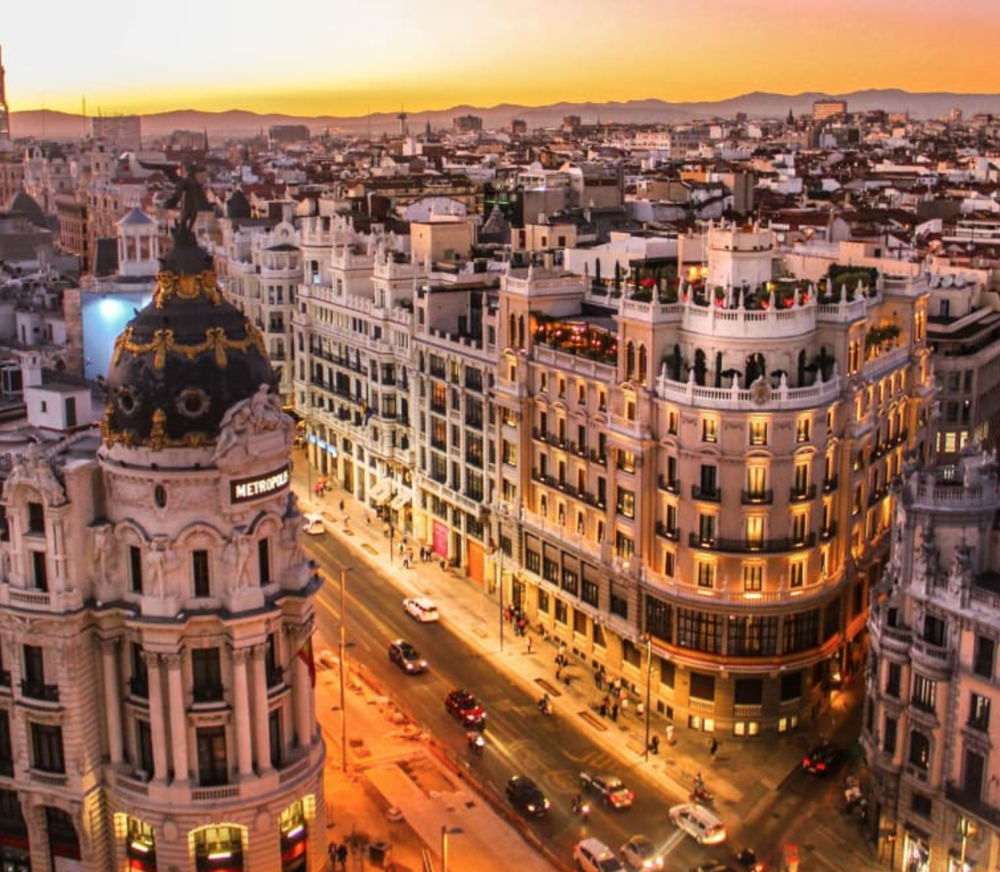

The Heart and Soul of Spain
Experience the vibrant colors, rich history, and captivating rhythms of a city that never sleeps. From stunning architecture to unforgettable gastronomy.

A Tapestry of History
Wander through cobblestone streets that have stood for centuries. The architecture here tells a story of diverse cultural influences, blending Moorish palaces with Gothic cathedrals and modernist masterpieces. Every plaza holds a secret, and every alleyway is a journey back in time.
Vibrant Lifestyle
As the sun sets, the city truly comes alive. Join the locals for evening tapas, savoring olives, jamón ibérico, and regional wines. The passion of the city is evident in the impromptu flamenco performances echoing from local taverns and the warmth of the people who call it home.